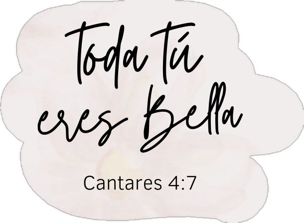
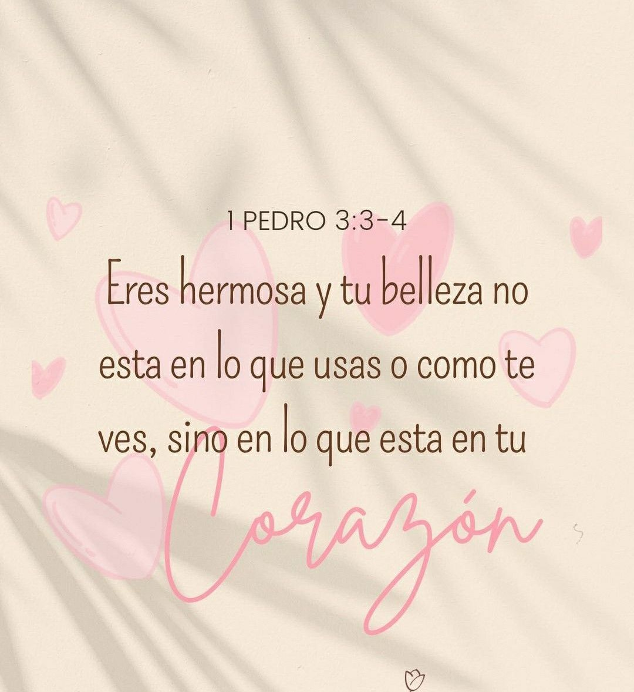

Espero que te guste… lo hice con mucho cariño, pensando en ti ✨
Hola...
Hay momentos en la vida que parecen pequeños, pero con el tiempo uno
se da cuenta de que no eran tan simples como parecían. A veces basta
una mirada, un instante corto, para que algo se quede guardado sin
hacer ruido.
Hace tiempo, en un día importante para mi familia, te vi. No hablamos
mucho, ni pasó algo grande, pero hubo una sensación tranquila que se
quedó ahí, como esas cosas que uno no entiende en el momento. Luego la
vida siguió, cada quien por su camino, y parecía que todo había
quedado como un recuerdo más.
Pero el tiempo tiene formas curiosas de ordenar las cosas. Volver a
coincidir contigo, en otro lugar y en otro momento, ya no fue igual.
Esta vez hubo oportunidad de conversar, de conocerte un poco más, y
ahí fue donde todo empezó a sentirse diferente, pero de una manera
sencilla y bonita.
Con el paso de los días, entre conversaciones y momentos compartidos,
empecé a notar lo especial que eres. No solo por tu sonrisa o tu forma
de hablar, que ya de por sí son agradables, sino por lo que
transmites. Hay algo en ti que da paz, algo que no se fuerza, que
simplemente está.
Admiro mucho la forma en la que vives tu fe. Cómo pones a Dios
primero, cómo lo reflejas en lo que haces y en lo que dices. Eso no
solo se nota, también se siente. Y en un mundo donde muchas cosas son
superficiales, encontrar algo así es realmente valioso.
También están esos detalles simples, como conversar contigo, escuchar
tu voz, compartir un momento sin que haga falta algo extraordinario.
Incluso esos pequeños tiempos de espera entre mensajes terminan
teniendo su propio valor, porque todo se mantiene natural, sin
presiones, sin complicaciones.
Recuerdo ese día que nos vimos. Más allá de cualquier detalle, fue un
momento bonito, de esos que se sienten tranquilos y sinceros. A veces
son las cosas más simples las que terminan quedándose más tiempo.
Tu forma de ser, tu manera de tratar a los demás, tu forma de ver la
vida… todo eso habla muy bien de ti. Y sin darte cuenta, transmites
algo bueno, algo que se queda.
No hace falta ponerle nombre a todo, ni apresurar nada. Hay cosas que
es mejor dejarlas fluir, con calma, permitiendo que el tiempo muestre
lo que tenga que mostrar. Lo importante es que lo que existe sea real,
sincero y tranquilo.
Y dentro de todo eso, quiero que sepas que puedes contar conmigo. Para
escuchar, para acompañar, para apoyar en lo que necesites. No con
palabras grandes, sino con algo sencillo pero verdadero.
También, de vez en cuando, te tengo presente en mis oraciones. No como
algo que se dice por decir, sino como un gesto sincero. Porque cuando
alguien transmite algo bueno, nace ese deseo de que le vaya bien, de
que Dios la cuide y la guíe siempre.
A veces la vida se pone bonita sin avisar… y hay personas que, sin
hacer ruido, hacen que todo se sienta un poco mejor.
Y bueno…
entre tantas cosas simples que se vuelven especiales, algún día
podríamos repetir un momento tranquilo, aunque sea con unos achotillos
de por medio.
Gracias por los recuerdos, por tu sonrisa, por tu cariño… aunque haya
sido breve, fue real.
Con cariño David Cundulli
Te conocí hace poco, pero el tiempo ha sido suficiente para darme
cuenta de lo especial que eres. No sé qué tenga preparado Dios más
adelante, pero por ahora me quedo con lo bonito de coincidir contigo y
con cada momento compartido. 💕


No es un final, solo un pequeño detalle que quise hacerte. Gracias por
cada momento, por tu forma de ser y por lo bonito que transmites.
Cuídate mucho y sigue siendo esa persona tan especial. 💕
Abre este enlace de TikTok:
TikTok Video
TikTok Video 💕
TikTok Video 💕
TikTok Video 💕
Te cuidas mucho, Heidicita. Que Dios guíe siempre tu camino y
bendiga esa luz tan bonita que transmites. ✨💕